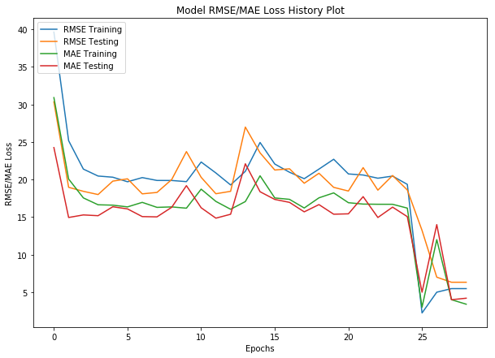

***Note: All computations and metrics have been calculated on the validation set of 717 mammograms (20% of overall dataset consisting of 3586 mammograms)
Root Mean Squared Error (RMSE): 5.23211819
Mean Squared Error (MSE) Loss: 27.37506075412888
Mean Absolute Error (MAE): 3.92403867821011 | Median Absolute Error (MED-AE): 4.701356909285345
R2 Score: 98.7453960128491023%
